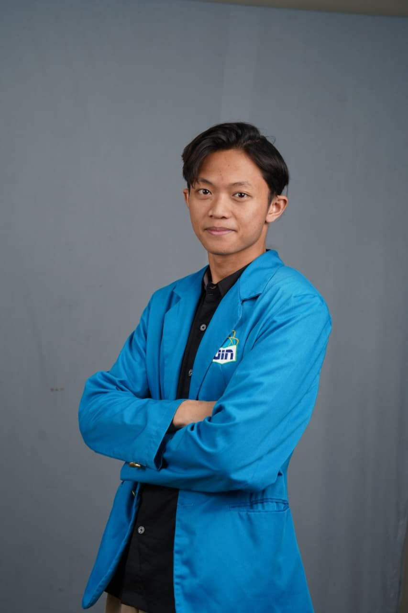
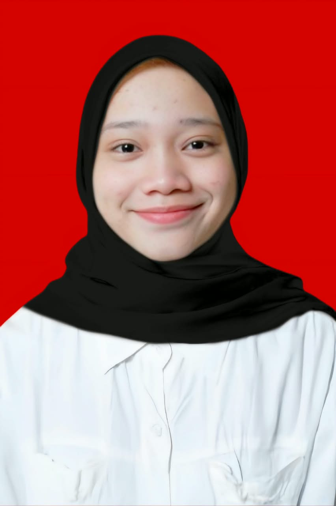
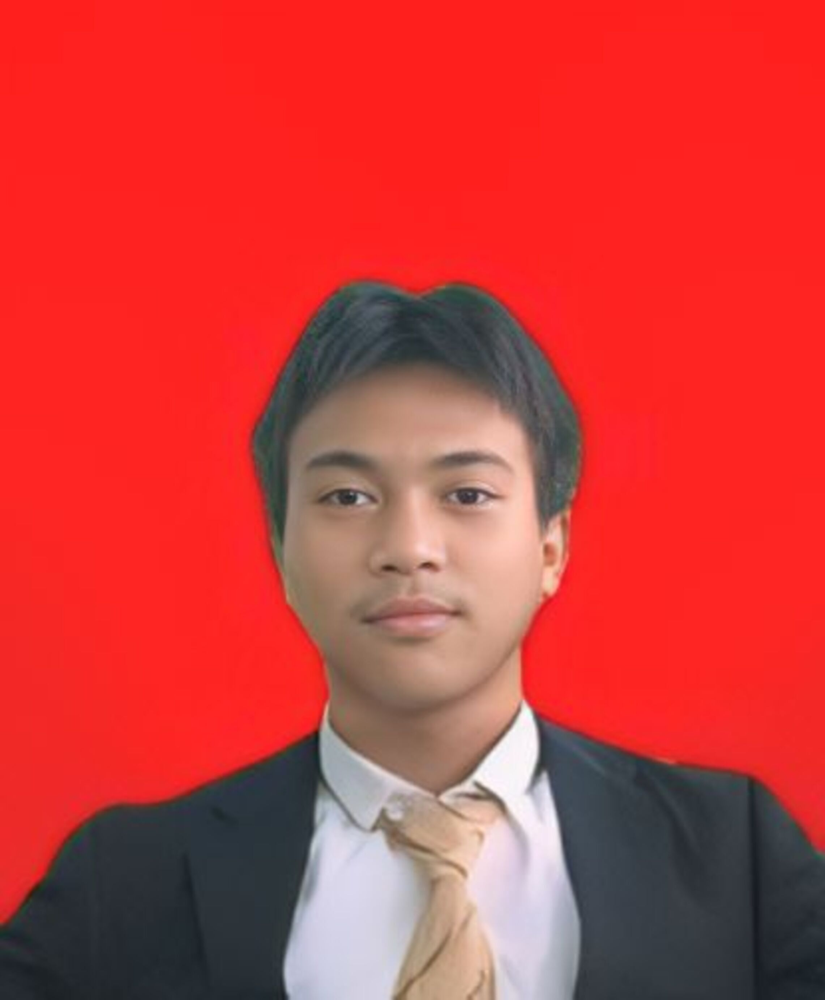

Ilham Nawawi
Mahasiswa Manajemen Pendidikan
Public Speaking
📞 +62 8973333121
✉️ nawawiilham879@gmail.com
📍 Jakarta Barat
Mahasiswa Manajemen Pendidikan yang memiliki minat pada
pengelolaan organisasi, public speaking, kaligrafi, dan lettering.
Lihat CV
Cetak CV
Pendidikan
Pesantren Daarul Muttaqien 2 Tangerang — SMP–SMA (2019–2025).
UIN Syarif Hidayatullah Jakarta — S1 Manajemen Pendidikan (2025–sekarang).
Pengalaman dan Organisasi
Aqlam Mural Kaligrafi (2023): proyek dekorasi kaligrafi untuk Musholla Al-Barokah, Cikokol.PT. Magnet Berjangka (2026): Trading Consultant – Breakout Caffe; memberikan konsultasi instrumen perdagangan dan analisis tren pasar.LDK Syahid Fakultas (2026–sekarang): Divisi Humas; komunikasi eksternal dan hubungan antarlembaga.HMPS Manajemen Pendidikan (2026): Divisi Acara dalam rapat kerja.Pusat Informasi dan Humas UIN Jakarta: Divisi Public Relation; siaran TikTok, informasi melalui chatbot, dan sosialisasi ke sekolah.Master of Ceremony 3 Bahasa (2024): memandu acara menggunakan bahasa Indonesia, Arab, dan Inggris.
Lomba
Peserta Lomba News Anchor PELITA KPI Nasional (Juli 2026).
Peserta Lomba MC Baswara Tingkat Nasional (Januari 2026).
Minat
Public speaking, kaligrafi, dan lettering.

Nashera Rahman
Mahasiswa Manajemen Pendidikan
Organisasi & Relawan
📞 +6289675757411
✉️ eiyaasera@gmail.com
📍 Cipedak, Jagakarsa, Jakarta Selatan
Lihat CV
Cetak CV
Data Diri
Tempat/tanggal lahir: Jakarta, 7 Maret 2005.
Pendidikan
PAUD Rambutan (2010–2012).
SDN Cipedak 03 Jagakarsa (2012–2018).
MTS Daarul Rahman Jakarta (2018–2021).
MA Daarul Rahman Jakarta (2021–2024).
UIN Syarif Hidayatullah Jakarta — S1 Manajemen Pendidikan (2025–sekarang).
Pengalaman Kerja
Guru pengabdian MTS dan MA Pondok Pesantren Daar el Hikam, Pondok Ranji, Tangerang Selatan (2024–2025).
Guru les privat anak calistung, Jagakarsa (2025).
Pengelola usaha F&B fried chicken (2025–sekarang).
Organisasi dan Kepanitiaan
Ketua Konsulat Putri DKI Raya 1, Ponpes Daarul Rahman (2021–2022).
Ketua Pelajar Ikatan Pelajar Putra-Putri Ponpes Daarul Rahman (2022–2023).
Pengurus kelas akhir Madrasah Aliyah, Divisi Pengajaran (2023–2024).
Volunteer Taman Baca Anak Cercondeso (2025).
Ketua angkatan alumni Daarul Rahman (2025–sekarang).
Prestasi dan Kegiatan
Juara 3 lomba tari tradisional antarsekolah dasar (2017).
Mengikuti lomba lari atletik 200 meter tingkat sekolah dasar (2017).
Juara 1 lomba qosidah kelompok antarangkatan aliyah dan tsanawiyah (2022).
Mengikuti lomba karya tulis cerita tingkat nasional (2026).

Reddhy Joferdho
Administrasi dan Tata Kelola Perkantoran
Administrasi Keuangan
📞 +628972885353
✉️ joferdhoreddhy@gmail.com
Lulusan SMK jurusan Otomasi dan Tata Kelola Perkantoran,
berpengalaman dalam administrasi, pelayanan pelanggan,
pengelolaan korespondensi, dan laporan keuangan sederhana.
Lihat CV
Cetak CV
Pengalaman Kerja
Layanan Umum (PKL), Resimen Arhanud 1/F
1 September 2022 – 31 Oktober 2022
Melayani anggota dalam pembuatan surat cuti.
Mengelola korespondensi kantor dan pencatatan surat masuk dan keluar.
Mencatat data rekapitulasi anggota.
Membantu pencatatan gaji anggota.
Pengalaman tambahan yang tercantum: Hotel Trembesi BSD sebagai waiter dan Table Top Mall Casablanca sebagai banquet dan steward.
Pengalaman Organisasi
Sekretaris Umum MPK OSIS SMK Kartika X-2 Jakarta
Juli 2022 – Mei 2023
Mengelola jadwal organisasi, dokumen, database, laporan kerja, dan proposal kegiatan.
Menyelenggarakan lebih dari 20 rapat kerja organisasi.
Mengelola dan memverifikasi transaksi serta bukti keuangan organisasi.
Bendahara Umum OSIS SMK Kartika X-2 Jakarta
Juli 2023 – Mei 2024
Menyusun rancangan anggaran organisasi.
Melaporkan penggunaan dana dan menyusun laporan pertanggungjawaban.
Pendidikan
SMK Kartika X-2 Jakarta (Juli 2021 – Mei 2024).
Jurusan Otomatisasi dan Tata Kelola Perkantoran.
Kemampuan
Bahasa Indonesia.
Microsoft Word dan Microsoft Excel.
Akuntansi, audit, pembukuan, dan analisis laporan keuangan.
Manajemen produksi, kerja sama, dan komunikasi.